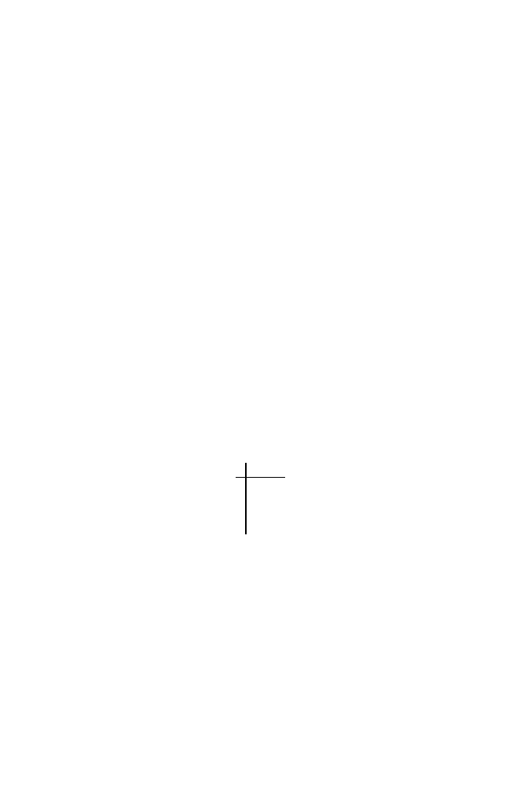

Exercises
363
http://www.megasoftware.net
Site for
MEGA2.1
, which focuses on distance methods.
http://abacus.gene.ucl.ac.uk/software/paml.html
Site for
PAML
, which focuses on likelihood methods.
http://morphbank.ebc.uu.se/mrbayes/
Site for
MrBayes
. This is good for a Bayesian perspective.
Exercises
Exercise 1.
Draw all rooted and unrooted trees with
n
= 5 leaves labelled
{
a, b, c, d, e
}
.
Exercise 2.
Use Stirling’s approximation
x
!
∼
(2
π
)
1
/
2
x
(
x
+1
/
2)
e
−
x
as in Section 6.5 to find the corresponding approximation for
b
n
in (12.1). Use
this to find an approximation for
b
100
.
Exercise 3.
Suppose
d
ab
, d
ac
and
d
bc
are distances that form an additive tree
for the unrooted tree with leaves
{
a, b, c
}
. (There is only one such tree.) The
tree has length
x
for the leaf
a
, length
y
for the leaf
b
and length
z
for the leaf
c
. Derive a formula for
x
,
y
and
z
in terms of
d
ab
, d
ac
and
d
bc
. [Hint: Draw a
picture.]
Exercise 4.
Using the results of the previous problem, find the unique tree
with distances given by
a b c d
a 0 3 6 5
b
0 7 6
c
0 3
d
0
Exercise 5.
You are given the following set of species and aligned sequences:
Site:
1 2 3 4
Species:
1
T C A A
2
G C A T
3
T T T T
4
G A T A
5
G A A C
6
A T A G
Find the parsimony score for the tree ((((1
,
2)
,
(3
,
4))
,
5)
,
6). Indicate the
F
sequence at each vertex of the tree.